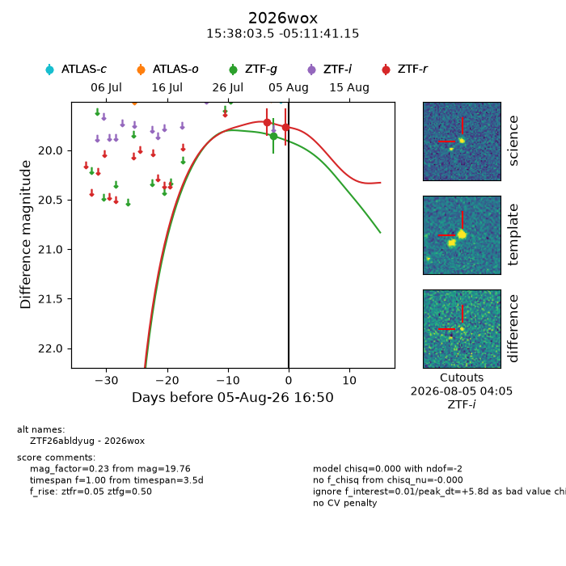
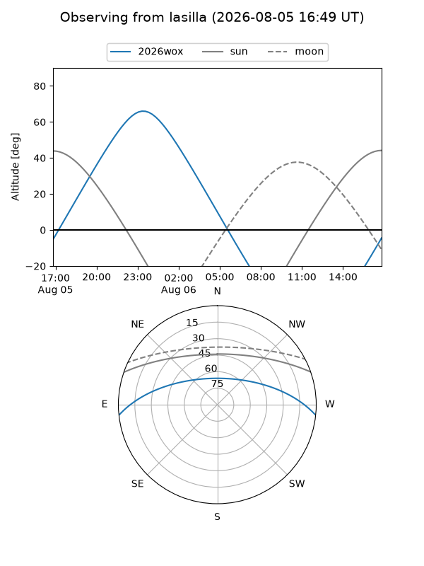
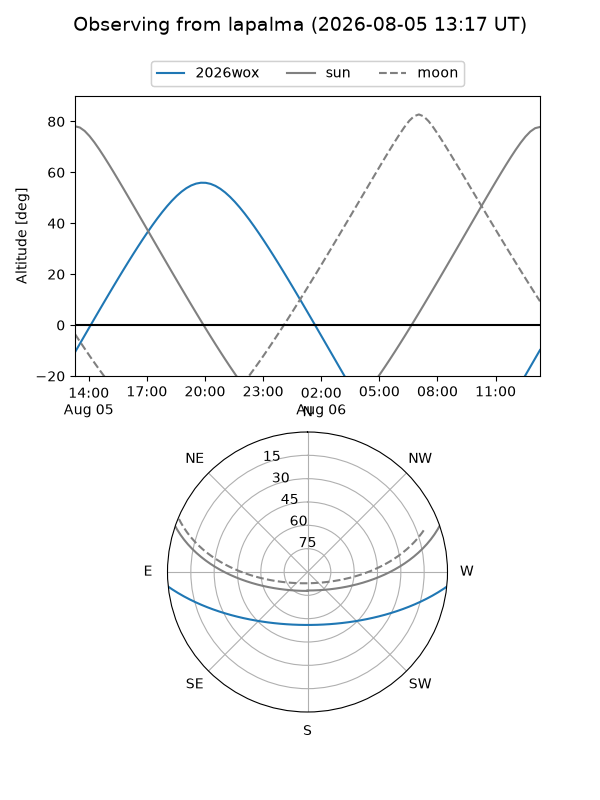
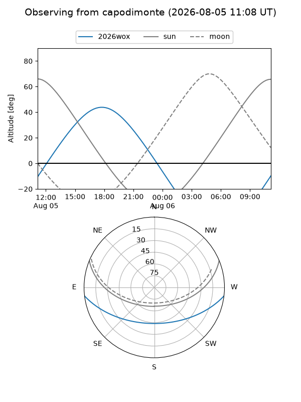
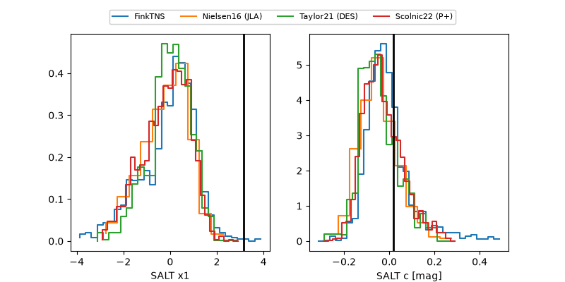

2026wox
Target 2026wox at 2026-08-06 04:49
Aliases and brokers:
FINK-ZTF: ztf.fink-portal.org/ZTF26abldyug
Lasair-ZTF: lasair-ztf.lsst.ac.uk/objects/ZTF26abldyug
ALeRCE-ZTF: alerce.online/object/ZTF26abldyug
YSE-PZ: ziggy.ucolick.org/yse/transient_detail/2026wox
TNS name: wis-tns.org/object/2026wox
Direct TNS query: direct search
alt names
ZTF26abldyug (ztf,fink_ztf)
2026wox (tns,yse)
Coordinates:
equatorial (ra, dec) = 234.5146,-5.19476
equatorial (HMS+DMS) = 15:38:03.50,-05:11:41.15
galactic (l, b) = (0.5437,+38.38525)
Flags:
TNS type: nan
peak dt: +6.3
Photometry:
last ztfg=19.86, ztfr=19.76
1 ztfg, 2 ztfr detections
Lightcurve

Visibility



Additional plots
